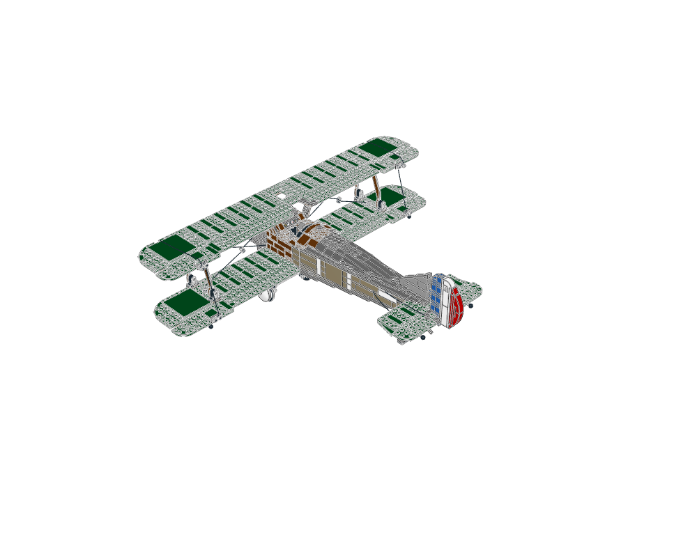
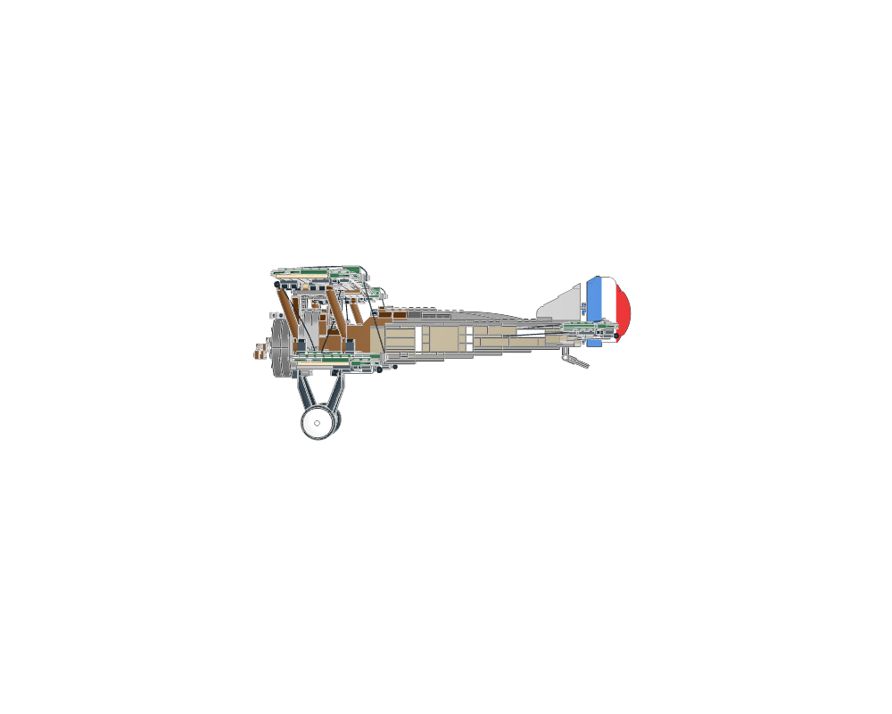
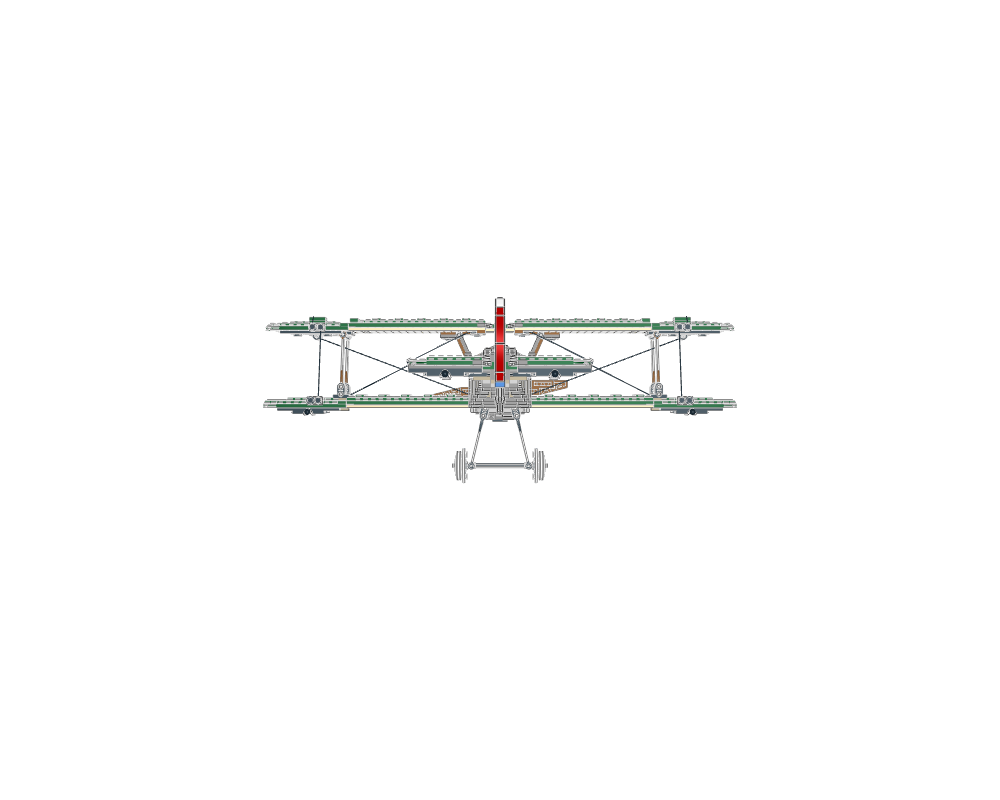
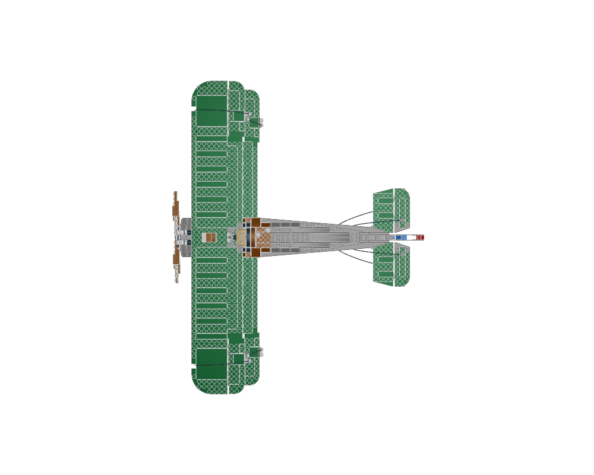
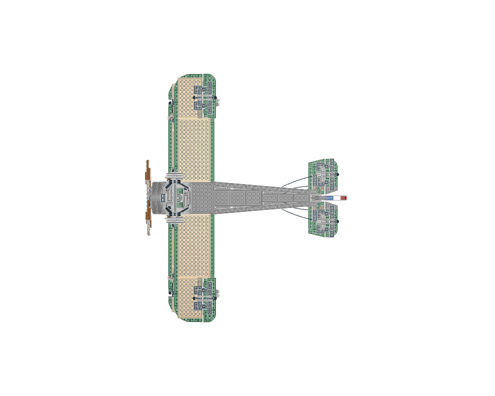
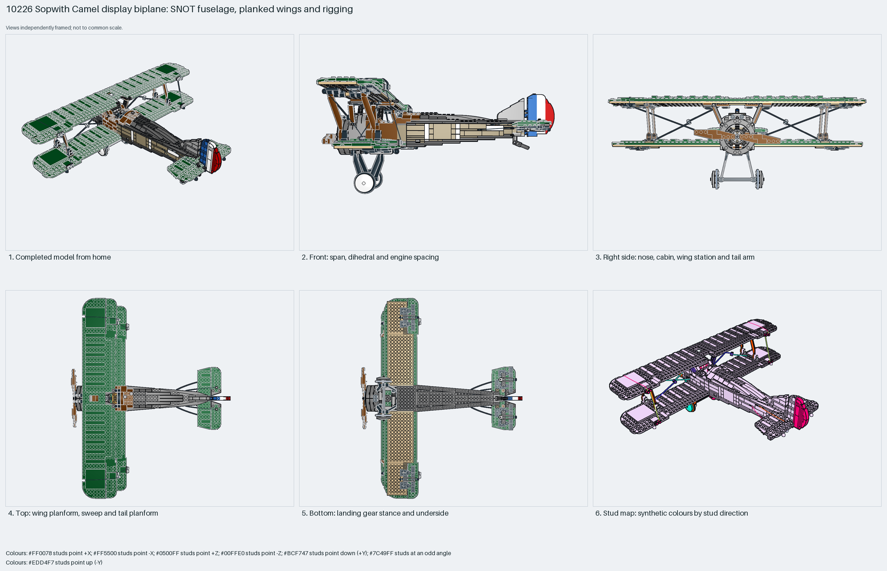

The Sopwith Camel display biplane: a fuselage of log bricks, hinge-plate side walls and SNOT panels around a latticed windscreen; two planked wings of 1×3 tile rows on plate spars joined by suspension-arm struts; a radial engine face and geared propeller; a wedge-plate tailplane and striped rudder on handles; towball-hinged ailerons and a shock-absorber landing gear; strings as rigging and rubber bands as tyres. Measured: span 59 studs, length 50, height 23, 811 parts plus string and band segments, 8% Technic.
construction
1211 placements in 222 steps across 50 sections named by source step: `step34`/`step35` side walls, `step40` and `step53` wings with `step53-11` sockets and `step53-13` struts, `step47` tailplane, `step58` landing gear with `shock`, `step59`–`step62` ailerons, `step66` rudder, `step69` propeller and engine, ten `string` rigging sections and four `band` sections from LDCad.
interfaces
722 studs up, 117 sideways, 362 angled. The wings meet the fuselage through the cabane and the strut arms; control surfaces snap into 63082 sockets; the gear frame pins under the belly; strings run between 572a string-end studs.
parent context
Root section; nothing places it. Built with the propeller at −X, so LeoCAD's front view shows the side and its right view the nose.
reuse notes
Use it for the proportions and module split of a display biplane: span 1.2× length, upper wing above the fuselage top, lower wing at the belly, rudder and ailerons as separate hinged sections. Inspiration only: the string and band sections are LDCad segments; the detail packages from this source (propeller, tailplane, aileron, rudder) are reusable on their own.

home

front

right

top

bottom

mosaic
Sections to study separately
Use manual prepare on a selected source section to create its build pages.